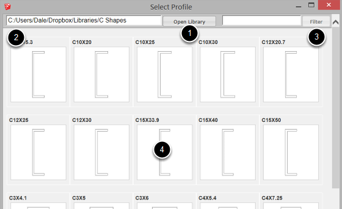

1. Click the Open Library button to choose a new library folder.
2. The current folder is shown at the top left.
3. Enter text to filter results.
4. Click a profile to load it.
Any SKP file that meets the following criteria can be loaded as a Profile into Profile Builder.
1. The file must contain a face that is not inside a group or component.
OR
2. The file must contain a polyline that is not inside a group or component.
If more than one face or polyline is found, unexpected results or errors may occur.